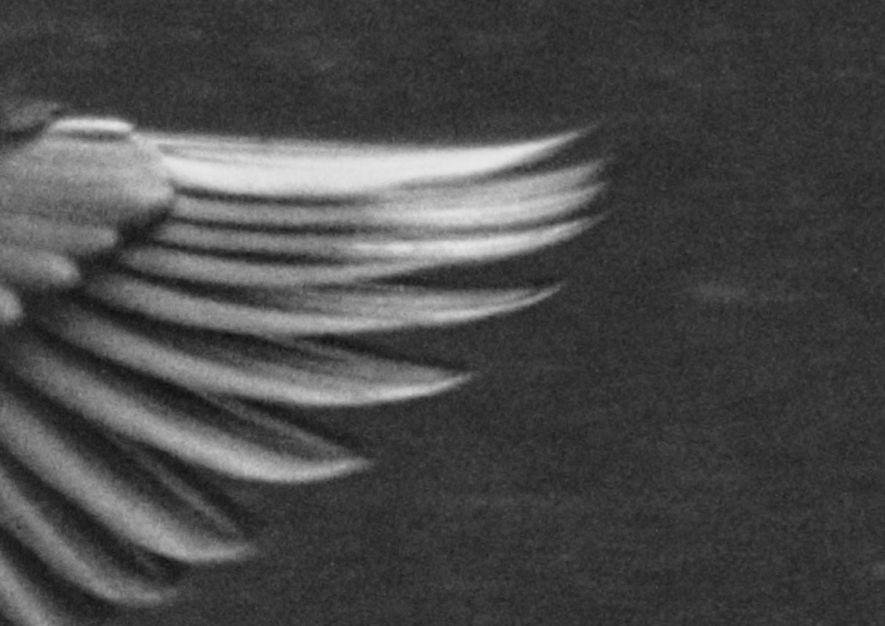

Você provavelmente já tirou fotos noturnas com o celular e se deparou com uma foto toda granulada. Isso acontece porque o celular está programado para aumentar a sensibilidade do sensor em condições de pouca luz. Chamamos de ISO a medida da sensibilidade do sensor à luz.
Um ISO baixo significa um sensor menos sensível e consequentemente uma foto mais escura. Aumentar o iso clareia a imagem, mas isso acaba gerando ruído digital.
A escala de ISO em que uma câmera trabalha pode variar bastante, mas geralmente fica em uma faixa entre 100 e 800. Mudar de 200 para 400 significa duplicar a claridade da imagem. Chamamos de low key ISOs excessivamente baixos e de high key ISOs excessivamente altos.
O ruído
Chamamos de ruído a granulação da foto. O ruído aparece porque sensores muito sensíveis começam a registrar raios de luz onde eles não existem. Na verdade, toda foto tem ruído, mas ele fica menos expressivo com sensibilidades menores do sensor.
Detalhe de imagem com ruído (foto inteira no Flickr):
Quando ajustar o ISO
Se você não quer ruído, o ideal é tentar manter o ISO sempre baixo (±100) e priorizar outros ajustes para clarear a foto. Recomendo mudar a abertura ou a velocidade do obturador. Em alguns casos, também pode ser usado o flash ou outras fontes de iluminação adicionais.
Em algumas situações não é possível realizar esses ajustes: ao fotografar pássaros voando, por exemplo, a prioridade é uma velocidade rápida no obturador (para congelar o movimento) e uma abertura pequena (para aumentar a profundidade de campo). Alterações no ISO se tornam necessárias. O excesso de ruído pode ser removido depois no computador, mas a qualidade nunca fica a mesma.
Dispositivos mobile costumam ter a abertura fixa. Assim, são programados para aumentarem o ISO em fotos noturnas.
Antigamente
Antes da fotografia digital, o filme da câmera (que fazia o papel do sensor) era oferecido em várias velocidades. Usar um filme rápido significava usar um filme que precisa de menos luz para gerar uma imagem na luminosidade adequada. A velocidade do filme era medida pela escala ASA (hoje convertida para ISO) e se dava pelo tamanho dos cristais fotosensiveis do filme. Esses cristais escureciam quando expostos à luz. Quanto maiores os cristais, mais sensível o o filme, mas a foto ficava mais granulada.
Antigamente
Antes da fotografia digital, o filme da câmera (que fazia o papel do sensor) era oferecido em várias velocidades. Usar um filme rápido significava usar um filme que precisa de menos luz para gerar uma imagem na luminosidade adequada. A velocidade do filme era medida pela escala ASA (hoje convertida para ISO) e se dava pelo tamanho dos cristais fotosensiveis do filme. Esses cristais escureciam quando expostos à luz. Quanto maiores os cristais, mais sensível o o filme, mas a foto ficava mais granulada.